Git Tutorial - 5. First Commit
1. Home
2. Git Installation (windows)
3. Repository Initialization
4. Repository Contents Post-Init
5. First Commit
6. Repository Contents Post-Commit
7. Branches
8. Rebase
9. Merge
10. Synching
Cheat Sheet - Command Line Interface
Cheat Sheet - Git
Cheat Sheet - Git#2
Cheat Sheet - Vi Text Editor
First Commit
Call git status in git bash
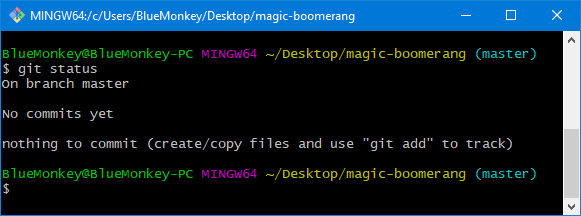
- By calling git status, git tells the status of the working directory files.
- Initially nothing is going on.
Create a HelloWorld.c file with the following contents
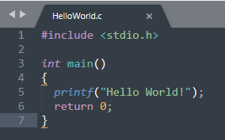
and save it in the magic-boomerang directory
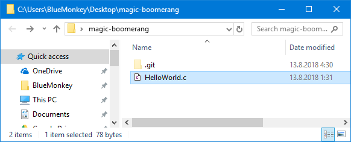
Call git status
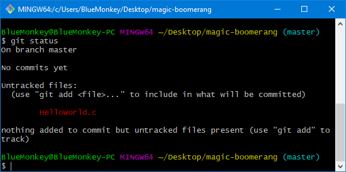
- In this case git status is showing a list of untracked files and is asking if the user wants to track them.
- The filename written in red indicates git is not tracking the file.
- Before adding the file to be tracked, let's call git status with a shorthand option.
Call git status -s
- The bare git status is rather verbose, so let's call the shorthanded version from now on.
- The two red question marks mean that the file is not tracked by git.
- Call git add HelloWorld.c
- Call git status -s
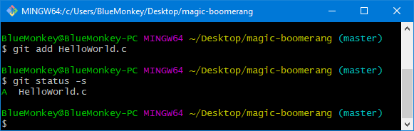
- The green 'A' status symbol means that the file is new to the repository and was successfully added to the index file for staging and tracking.
- The added file now has a copy of it in the index file.
- Files in the index file are being compared to the ones in the working directory when git status is being called.
- Tracking of files means this comparison work done by git status.
- Index file is conceptually known as the stage, a place where files are being added to, so git knows what files should be tracked for changes.
- After the adding of files, the index file is commitable as a snapshot to the key-value storage database inside git repository.
- Snapshots have all the necessary information to restore the file structure and file contents to the working directory.
- User may choose not to track certain files, then the untracked files will not be a part of the snapshot, but they will always be shown as untracked when git status is called, unless they are being configured to be ignored.
- The same index file is used for all tracking, staging and committing of files.
- The index file is located in the root of .git.
- It was generated there after first call to git add <FileName>.
- Index file contents are always equal to "current snapshot files" plus any "newly added files".
- In a brand new repository, there is no existing snapshot, so the index file contents is just the "newly added files", the HelloWorld.c in this case.
- To list all the files currently in the index file, user can call git ls-files -s.
- The contents of an individual file in the index can be viewed in git bash by calling git show :<FileName>.
Modify the contents of HelloWorld.c like so
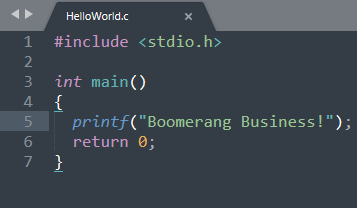
Then call git show :HelloWorld.c
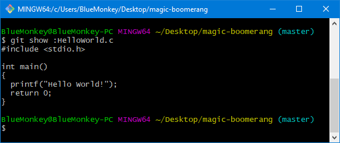
- Despite the modification, the index file does not reflect the changes made, because it wasn't updated (staged) by calling git add <FileName>.
Call git status -s
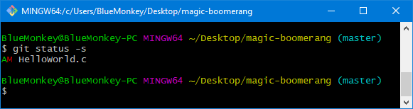
- Red 'M' stands for being modified, meaning the current tracked version in the working directory differs from the one in the index file.
- Modified file must be restaged in order to update the index file version of it.
- Call git add HelloWorld.c (to update the index file for HelloWorld.c)
- Call git status -s
- Call git show :HelloWorld.c
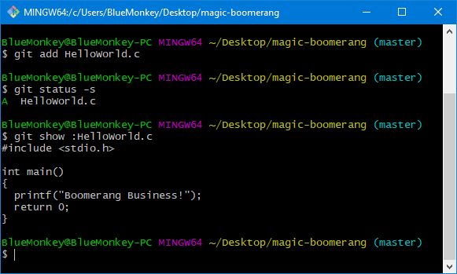
- As can be seen, the contents of the HelloWorld.c is now updated in the index file.
- Bear in mind, we have not made a single commit yet, but we will get there shortly.
- Rename HelloWorld.c into NewWorld.c
- Call git status -s

- Git treats renaming of files as creation of a new file and as a deletion of the old file.
- D stands for deleted file.
- By calling git add HelloWorld.c in this state would remove the HelloWorld.c from the index file.
- Rename NewWorld.c back to HelloWorld.c
- Call git status -s
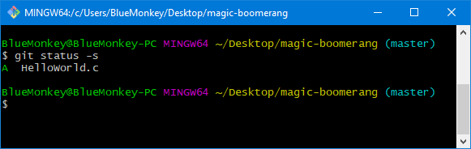
- And everything is good again.
Call git commit -m "initial commit"
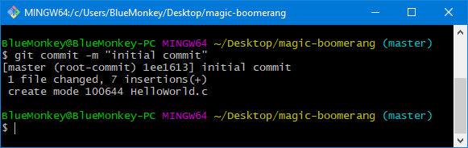
- By calling git commit -m <CommitMessage>, git takes the contents of the index file and saves it as the topmost commit for the branch the user is currently checked out to, the master branch in this case.
- The -m option stands for message which expects a message string right after it.
- Commit messages are mandatory as those will be used in the hashing generation of commit hashes.
Call git log
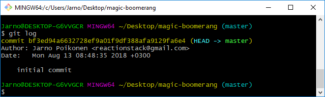
- By calling git log, git will show the full list of commits made, the topmost commit being the latest one and the most bottom being the first one in commit history.
- git log will also show (HEAD -> master) on the topmost commit which means that this is the commit the HEAD file is referring to and that the branch in question is master.
- Once the log grows long enough it is paged by vi in the terminal, if you ever get stuck reading logs, press q
Call git log -<n>
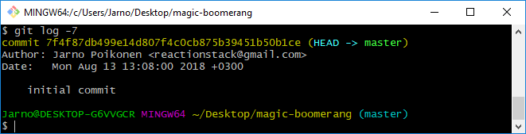
- By providing a number, git will print only the latest n logs.
- However in this case, git is only able to show one commit (out of the attempted seven) that was committed.
Call git tag -a v0.1.0
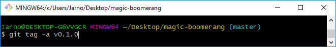
- Tags are often used for marking versions but they can be used to just give commit hashes (the 40-character long hexadecimal strings) more memorable names.
- By calling git tag -a <TagName>, git creates an alias for the current checkout commit.
- A reference file is created in the .git/refs/tags directory, but the actual tag object is stored in the .git/objects directory.
- By calling git tag -a <TagName>, git calls the default text editor that was installed at the time of installing git.
- The text editor in question is vi.
- For the sake of this tutorial vi is not explained at all.
- There's a cheat sheet pdf for vi commands in the links.
vi opens...
- As vi opens it starts off in a state where it expects commands, press i.
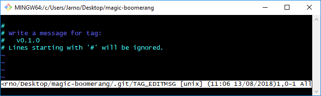
Type message.
- Now on the bottom vi says --INSERT-- which means the vi is in the edit state, feel free to type the tag message.
Press ESC, type :wq! and press ENTER.
- Press ESC to escape back to command mode.
- Then write :wq!, the text will appear in the bottom.
- Then press ENTER, vi saves the tag message and exits back to git bash.
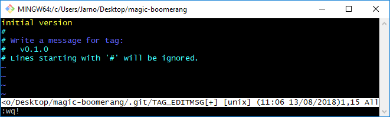
Call git tag -l
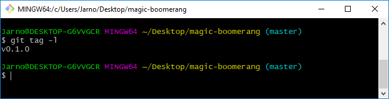
- git tag -l shows all the created tags in the repository.